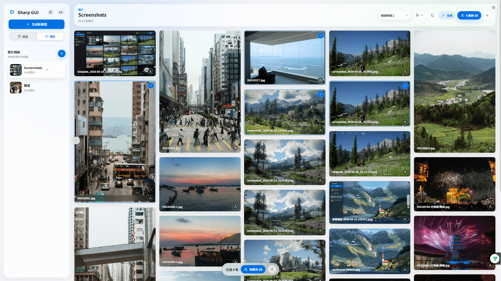
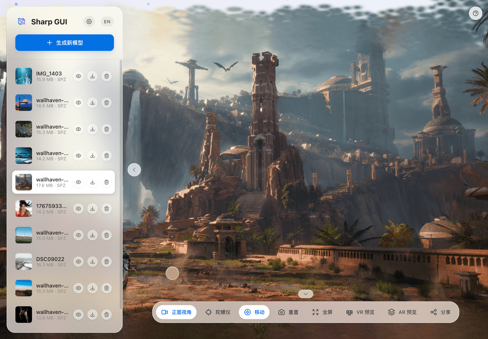

全模态控制
不仅支持键盘 WASD 漫游，更支持移动端陀螺仪体感操控，身临其境。
打破设备界限，一次部署，全屋访问。无需云端上传，在浏览器中即可生成并漫游令人惊叹的 3D 场景。

从照片到 3D 空间，只需三步
拖拽上传您的照片或视频素材，支持批量处理
基于 Ml-Sharp，本地生成，保护隐私
在任意设备上通过浏览器沉浸式预览
配置多个本地目录作为相册，用缓存缩略图快速浏览，打开时加载原图，并可把单张或多张照片直接加入 3D 生成队列。

从本地相册视频或拖拽视频出发，配置质量档和自定义参数，经过抽帧、位姿估计、Gaussian 训练与导出，最终回到现有模型图库中预览和分享。

打破设备隔阂。在 PC
运行服务，手机、平板通过局域网即可流畅访问。
响应式设计，为您呈现一致的优雅体验。



原生级毛玻璃效果、SF Pro 字体与丝滑的缓动动画。
数据完全本地化，无限制内容生成，一切由你掌控。
基于 Three.js + Spark (WASM 加速)，体积减少 43%，点击聚焦，加载飞快。
不仅支持键盘 WASD 漫游，更支持移动端陀螺仪体感操控，身临其境。

触摸屏设备内置虚拟摇杆，实现如PC端键盘一样的漫游体验。
告别繁琐的服务器部署。只需点击导出，即可生成一个独立的 HTML 文件。


Shift 加速/微调，精准控制视角

拖拽上传，并支持批量处理和任务中断
生成独立 HTML，支持任何设备查看
现代化技术栈，为极致体验而生
支持 macOS, Linux 和 Windows (WSL)
# 1. 下载并解压最新 Release
unzip sharp-gui-latest.zip
cd sharp-gui
# 2. 一键安装 (自动配置环境)
./install.sh # Linux/macOS
install.bat # Windows
# 3. 启动服务
./run.shgit clone
克隆仓库，之后运行
git pull
即可同步最新代码。